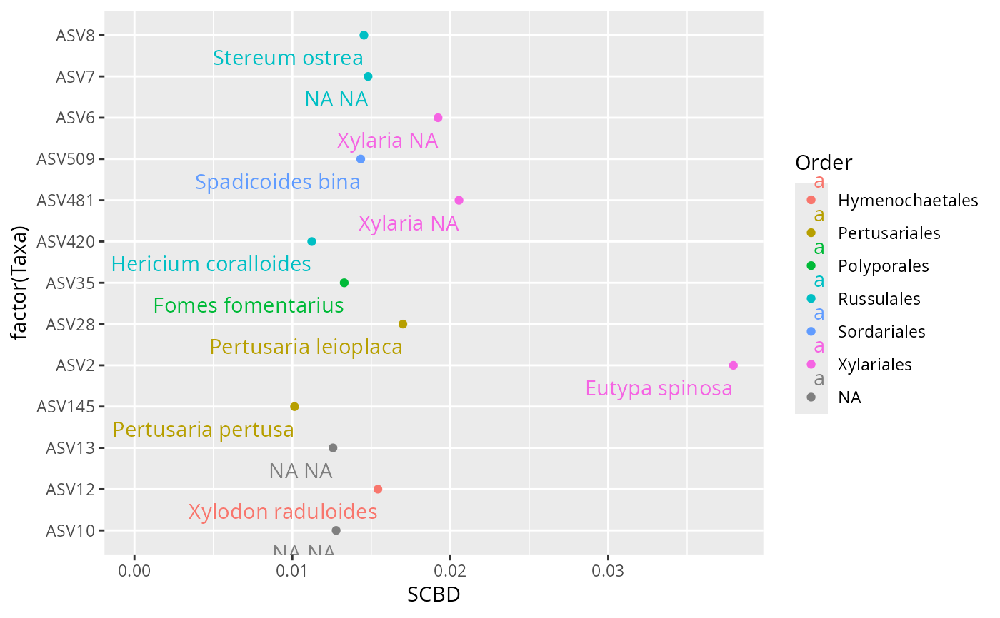
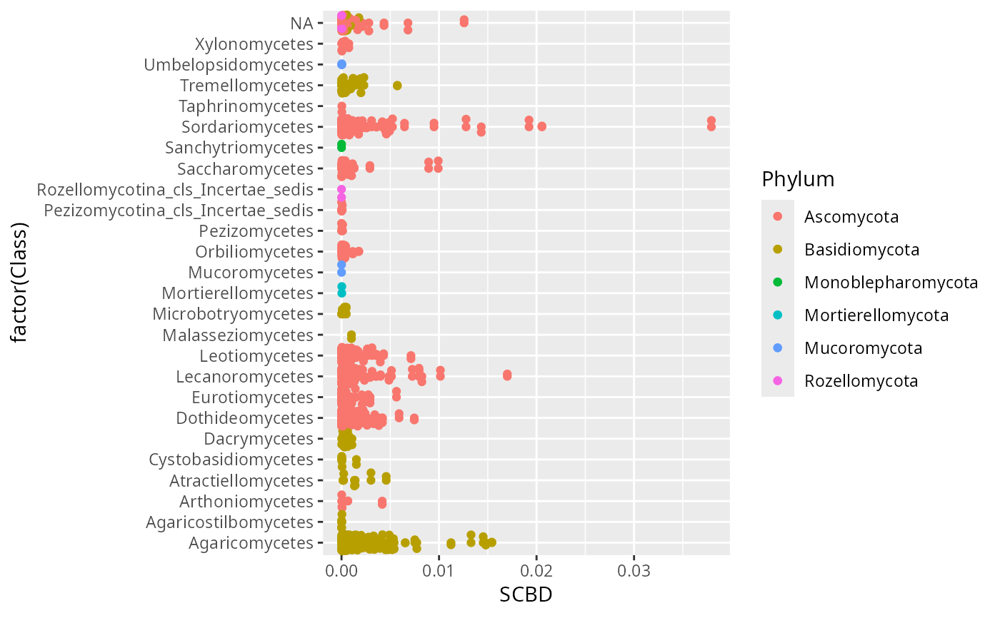

Plot species contributions to beta diversity (SCBD) of samples
Source:R/beta_div_test.R
plot_SCBD_pq.Rd
A wrapper for the adespatial::beta.div() function in the case of physeq
object.
Arguments
- physeq
(required): a
phyloseq-classobject obtained using thephyloseqpackage.- tax_level
Taxonomic level to used in y axis
- tax_col
Taxonomic level to colored points
- min_SCBD
(default 0.01) the minimum SCBD value to plot the taxa
- ...
Additional arguments passed on to
adespatial::beta.div()function
Details
This function is mainly a wrapper of the work of others.
Please make a reference to vegan::beta.div() if you
use this function.
Examples
data(data_fungi)
if (requireNamespace("adespatial")) {
plot_SCBD_pq(data_fungi) +
geom_text(aes(label = paste(Genus, Species)), hjust = 1, vjust = 2) +
xlim(c(0, NA))
}

# \donttest{
if (requireNamespace("adespatial")) {
plot_SCBD_pq(data_fungi, tax_level = "Class", tax_col = "Phylum", min_SCBD = 0) +
geom_jitter()
}

# }